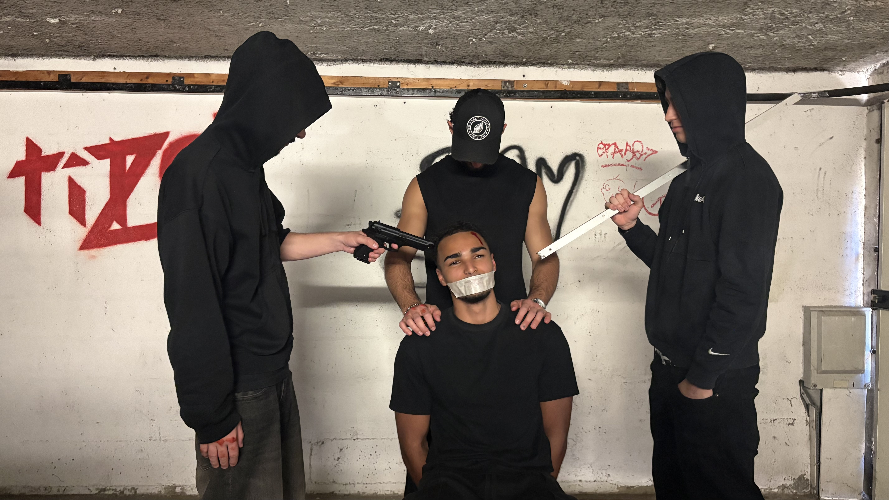
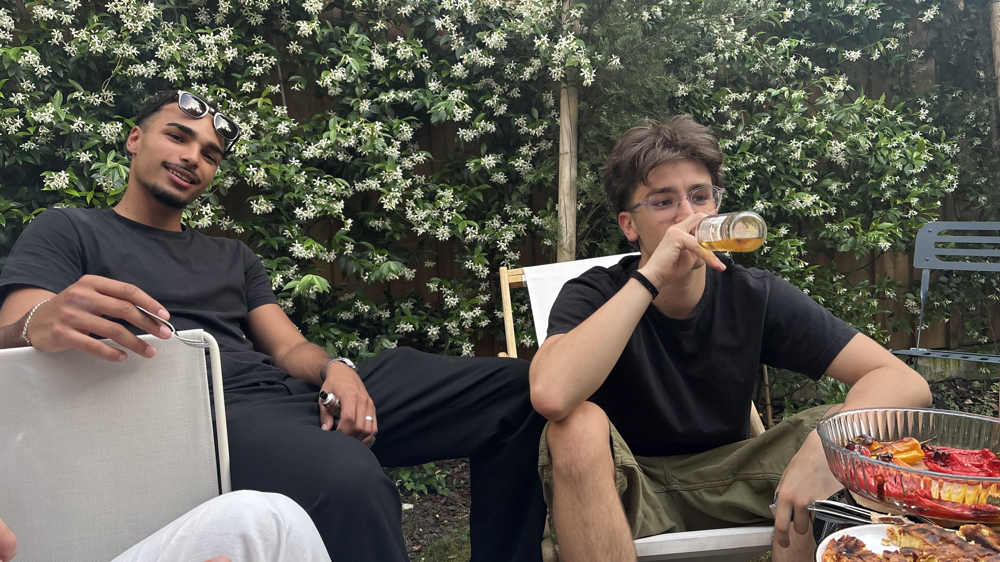

Étudiante en Communication & Marketing
Faustine
Le Guiffant de Kerleau
Communication · Marketing · Design
Voir mes projets
Étudiante en Communication & Marketing
Communication · Marketing · Design
Voir mes projets
Suite à mon stage chez Nestlé en tant que Chargée de Marque Employeur Relation Ecoles avec une optique communicztion, je suis à la recherche de mon prochain stage en communication et marketing pour une durée de 5 mois à partir de septembre 2026.
Je m'appelle Faustine, et ce qui me définit le mieux, c'est que je ne veux pas choisir. Pas choisir entre la stratégie et la créativité. Entre les médias et le marketing. Entre l'analyse d'un positionnement et la conception d'un contenu qui accroche.
Mon parcours à l'EFAP m'a permis de toucher à tout ce qui m'attire : marque employeur chez Nestlé, journalisme d'enquête chez Cartel Presse, production audiovisuelle chez Weclap, et stratégie de lancement en agence. Trois univers très différents, une conviction commune : la communication n'a d'impact que quand elle est pensée dans sa globalité.
Renforcer mes compétences en Marketing
Contribuer à des projets concret et les voir aboutir
Travailler au sein d'une équipe positive et qui souhaite se develloper
Continuer à develloper des competences en communication

Utilisation de la suite adobe · Créativité · Oraganisation
Dans le cadre de ce projet, nous avons réalisé un magazine sur Adobe InDesign destiné aux futurs étudiants de l’EFAP. L’objectif est de leur présenter l’école, ses formations, la vie étudiante et les opportunités professionnelles de manière claire et attractive. Ce projet nous a permis de développer nos compétences en mise en page, en conception éditoriale et en communication visuelle, tout en créant un support informatif adapté à notre cible.
Création d'un pilote · Promotion d'une marque · Projet vidéo
À la suite de la mystérieuse disparition de son frère, une jeune femme se lance dans une enquête en suivant les indices laissés dans son agenda de la Carte Jeune. Son périple la conduit à découvrir un réseau de vols d'œuvres d'art et à comprendre que son frère a été kidnappé. Cette aventure mêle suspense, enquête et découverte des opportunités offertes par la Carte Jeune.
"La Carte Jeune Bordeaux Métropole est un pass malin qui ouvre l’accès à des milliers d’activités culturelles, sportives et de loisirs à tarifs réduits pour profiter pleinement de la vie étudiante et locale."


Création de contenus pour les réseaux sociaux (vidéos, posts, labels, modérations) Rédaction de réponses employeur sur Indeed et Glassdoor Mise en place d'initiatives pour l'obtention du label Happy Trainees Organisation d'événements internes et externes (onboarding, forums, visites d'usines) Amélioration du site carrière Nestlé France
Enquête et rédaction de sujets pour TF1, M6 et France Télévisions Organisation de castings pour reportages Suivi de la post-production audiovisuelle
Recherche du public pour des émissions TV (Culture Box, Quelle Époque, J-1…) Coordination des participants et logistique des tournages
Participation à la collecte et distribution de denrées alimentaires au prés d’une 50e de personnes dans le besoin.
Communication, relation médias, design graphique, publicité, fondamentaux du marketing, marketing digital, data labday, battle, media planning, code, IA, ....
Sciences Economique et Social · Anglais du Monde Contemporain

Je recherche un stage de 5 mois à partir de septembre 2026 en marketing afin de découvrir un nouveau monde dans la communication.
N'hésitez pas à me contacter !